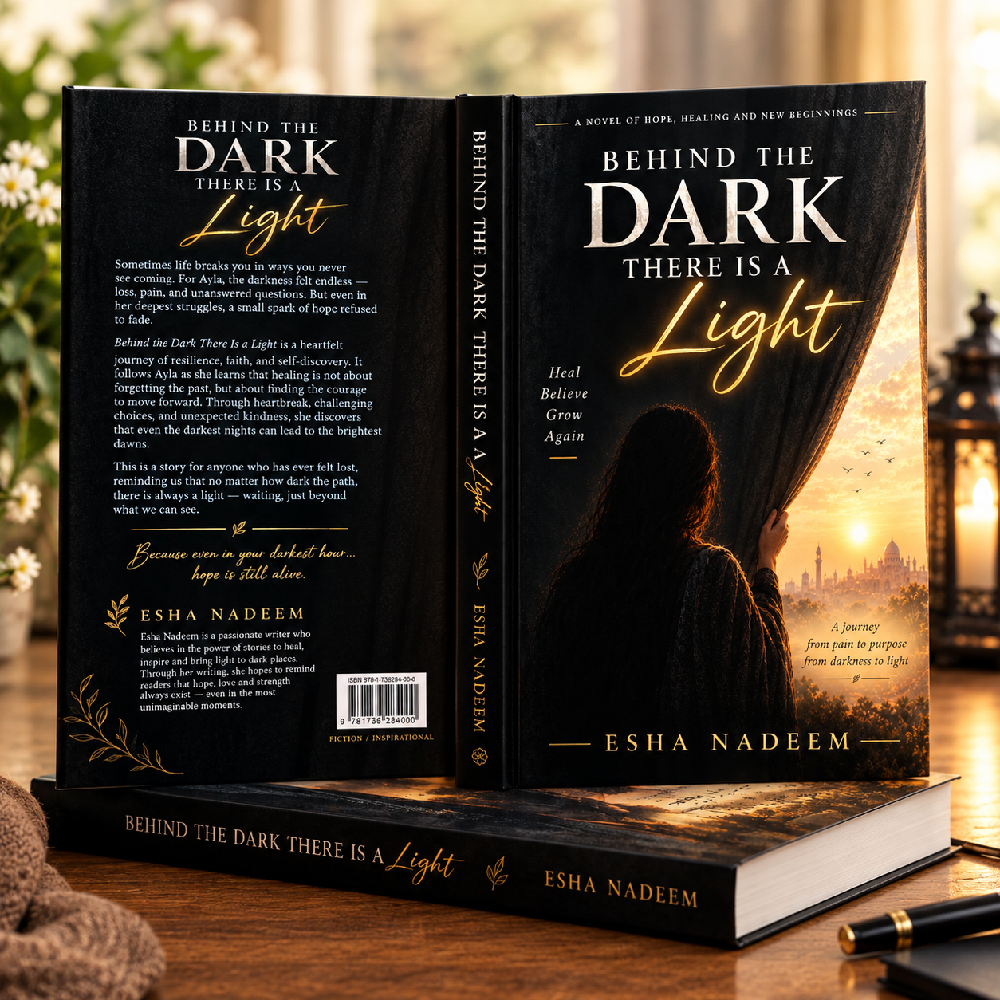

A NOVEL BY ESHA NADEEM
Behind the Dark,
There Is a Light
A story of grief, healing, and the courage to hope again.
For every heart that has lost its way in the darkness — and every soul still searching for a little light.

Some stories find us
when we need them most.
A HEARTFELT JOURNEY
Even after loss,
life can begin again.
Some losses change us forever. Some silences stay with us for years. And sometimes, when we believe all the light has disappeared, life leaves us a reason to hope again.
Behind the Dark, There Is a Light follows Ayla through grief, memories, unanswered questions, and the slow, tender work of learning to live again.
This is a story for anyone who has ever felt broken, forgotten, or afraid that happiness might never find them again.
Step into Ayla's world →You don't have to finish grieving
before you begin living again.
— BEHIND THE DARK, THERE IS A LIGHT
TURN THE PAGE
A little closer
to the light.
Explore the chapters and follow Ayla's journey, one page at a time.
Some mornings arrive softly. Others remind us of everything that is missing. Ayla's journey begins in the quiet space between memory and the life she is still learning to live.
Replace this short preview with an excerpt from your first chapter before publishing.
Some things are too precious to throw away and too painful to hold. Ayla discovers that memories can hurt and comfort us in the very same breath.
Replace this short preview with an excerpt from your second chapter before publishing.
A forgotten letter carries a message Ayla was not ready to hear — a reminder that even in the darkest season, love may still find a way to reach us.
Replace this short preview with an excerpt from your third chapter before publishing.
These are sample chapter titles and preview text for the website template. Replace them with your manuscript's actual chapter titles and excerpts.
YOUR NEXT CHAPTER AWAITS
Bring the story
home.
The hardcover edition of Behind the Dark, There Is a Light is intended for readers who want to keep this story close.
Tap the button to message me on WhatsApp about ordering your hardcover copy. For other questions, email eshanadeem4527@gmail.com.
FOR THE ONES STILL HEALING
“You are allowed to grieve, to begin again, and to find light in your own time.”
If you find a little piece of yourself in Ayla's journey, I hope these pages remind you that healing does not have to happen all at once. Be gentle with yourself. There is still more story ahead.
With love, Esha